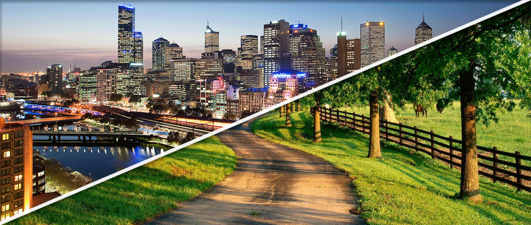

Vida no Campo

O campo é aonde nasce o alimento que chega à mesa de todos. Nele, vivem pessoas que trabalham na agricultura e cuidam do meio ambiente.
Vida na cidade
A cidade é aonde estão o centros comerciais, escolas, hospitais e muita tecnologia. Mas ela depende do campo para continuar viva.
A conexão entre Campo e Cidade
Campo e cidade não são opostos: eles se completam. A cidade consome o que o campo produz, e o campo precisa da tecnologia e infraestrutura da cidade.